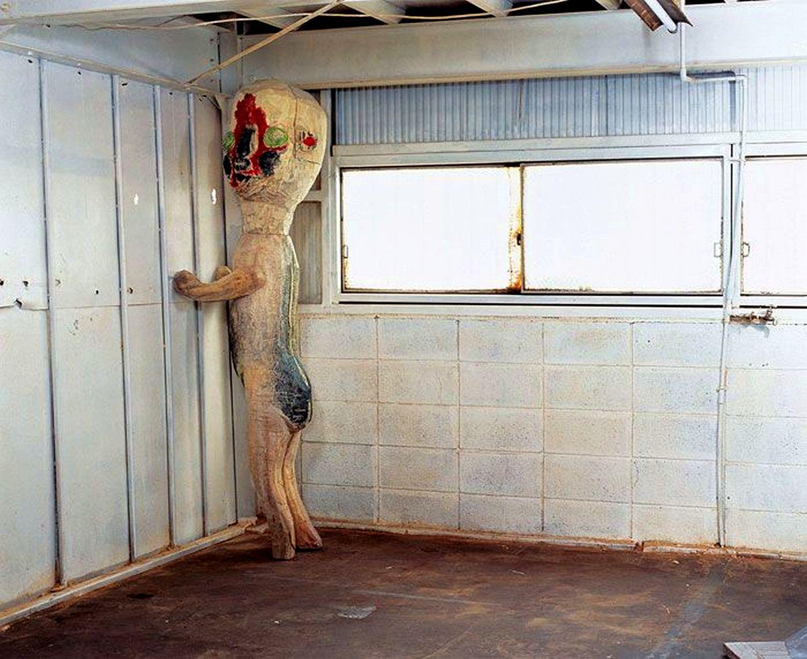

5 Creepypasta Yang Paling Populer
Slender Man
Img: Pixabay
Slender Man adalah makhluk supranatural dengan karakteristik dan kemampuan yang tidak jelas. Dia digambarkan makhluk humanoid tinggi dalam setelan hitam atau abu-abu, dasi merah atau hitam, dan kemeja putih. Wajahnya benar-benar putih, sama sekali tidak memiliki wajah. Dia tidak memiliki rambut, dan umumnya memiliki tangan kosong yang tampak normal, meskipun dengan jari lebih panjang dan lebih kurus dari manusia biasa. Slender Man digambarkan memiliki tinggi antara 2 hingga 3 Meter, tergantung pada situasinya, meskipun dalam video dia biasanya hanya 1.5 hingga 2 Meter.
Slenderman juga sering dikatakan dapat memanjangkan atau meregangkan anggota tubuhnya, terutama lengannya sesuka hati, dan memiliki tentakel yang keluar dari punggungnya.
Awalnya, dia digambarkan tidak hanya jahat, tetapi juga sangat berbahaya. Dia akan mengintai korbannya, menusuk mereka di pohon, dan mengambil organ mereka. Sebagai perbandingan, penggambaran kontemporer telah mengubahnya menjadi makhluk yang lebih pasif-agresif. Alih-alih mengejar secara aktif, ia lebih cenderung membiarkan korbannya perlahan-lahan menjadi gila sampai mereka tidak dapat mengobatinya, ia sering kali mengawasi dari jauh saat ini terjadi. Jika marah, ia akan menyerang korban dan menghilang bersama korbannya ke lokasi yang tidak diketahui.
SCP-173
Img: cpuniverse
SCP-173 adalah makhluk yang terbuat dari beton. Asal usul dari makhluk ini masih belum diketahui, dan sangat pemarah. SCP-173 tidak bisa bergerak saat dilihat secara langsung dan tidak boleh berkedip. Personil minimal tiga ditugaskan untuk memasuki kontainer dan saling mengingatkan sebelum berkedip. Dilaporkan dia dapat membunuh korbannya dengan cara mematahkan leher manusia yang ditemuinya.
Ketika tidak ada orang didalam kontainer. Personil melaporkan suara gesekan batu di dalam. Mereka melihat zat coklat kemerahan di lantai, setelah di teliti zat tersebut adalah kombinasi dari kotoran dan darah. Asal bahan ini tidak diketahui tetapi harus selalu dibersihkan.
Agar tidak dapat melarikan diri SCP-173 harus disimpan dalam tempat isolasi yang terkunci setiap saat. Ketika personel memasuki kontainer SCP-173, minimal tiga orang boleh masuk kapan saja dan pintu harus dikunci kembali ketika mereka masuk. Setiap saat, dua orang harus menjaga kontak mata langsung dengan SCP-173 sampai semua personel keluar dan mengunci kembali kontainer.
The Backrooms

Img: creepypasta.com
The Backrooms adalah sebuah cerita urban atau creepypasta yang menceritakan sebuah labirin yang tak berujung. The Backrooms juga adalah sebuah dimensi lain yang bisa disebut dengan glitch. Salah satu cara terpopuler adalah dengan no-clipping. No-clipping sendiri adalah dimana seseorang berlari dengan kecepatan tinggi menembus sebuah benda keras di depan/bawah mereka (tembok/lantai). Untuk berhasil no-clipping, syaratnya adalah kamu harus melakukannya secara tidak sengaja dan barang/benda yang kalian gunakan untuk no-clipping tidak boleh rusak.
The Backrooms dikarakteristikan dengan bau karpet basah, dinding dengan warna kuning monokromatik, dan lampu pendar yang berdengung kencang. backrooms sendiri memiliki banyak sesi yang disebut level. Level pertama adalah level yang paling banyak dibincangkan orang-orang, yaitu Level 0 yang bernama "Tutorial Level". Menurut beberapa orang, terdapat 9 kuardiliun level yang diketahui untuk sekarang, namun banyak orang yang mengatakan bahwa backrooms tidak memiliki ujung alias memiliki level yang tak terujung.
Pada level 0, karpet yang hangat, lampu neon yang berdengung, dinding berwarna kuning monokromatik diduga menjadi salah satu sumber dimana tingkat kewarasan seseorang akan menurun, ditambah setiap kalian berpindah level ke level lain cahaya disekitar akan meredup hingga gelap seutuhnya ketika di level tinggi, lalu akan banyak monster atau disebut creatures dan entities yang akan mencoba menyerang kalian.
Bloody Mary
Img: unknown
Bloody Mary adalah sosok hantu yang dipercaya terperangkap di dalam cermin. legenda mengatakan bahwa Mary merupakan penyihir Salem yang terkenal, ada pula yang mengatakan bahwa Mary adalah seorang gadis yang di bunuh sadis oleh kekasihnya, dan ada pula yang menceritakan bahwa Bloody Mary ialah hantu Ratu Inggris bernama, Marry I. Entah cerita mana yang benar mengenai asal – usul hantu ini, tidak ada keterangan yang pasti.
Ia akan muncul bila ada seseorang yang memanggilnya dengan cara berdiri di depan cermin (biasanya di dalam kamar mandi) dengan lampu padam lalu kemudian memanggil namanya sebanyak tiga kali. Kebanyakan orang menyebutkan bahwa sosok misterius itu akan muncul dan mengambil mata dari orang yang memanggilnya tadi. Biasanya anak-anak khusunya di Amerika sering menjadikannya permainan semacam uji nyali.
Squidward Red Mist

Img: unknown
Red Mist dimulai dengan Squidward yang hendak berlatih dengan klarinetnya, sementara Spongebob dan Patrick bermain di luar rumah. Ketika hendak memainkan klarinetnya, ada seseorang yang mengetuk pintu rumah Squidward.
Kemudian Squidward turun dan membuka pintu rumahnya. Ternyata pengetuk pintu rumahnya adalah salesman (berwujud ikan dengan pakaian Skotlandia). Dia mencoba mengajak Squidward berbincang, namun Squidward menolak dengan membanting pintu rumahnya.
Salesman itu tidak pergi, dan mengetuk kembali rumah itu. Ketika pintu dibuka kembali, wajah salesman tampak marah sambil berkata "Red Mist is coming" kepada Squidward. Sambil kebingungan Squidward kembali ke kamarnya dan melanjutkan latihannya.
Saat ingin melanjutkan latihannya, Squidward terganggu oleh suara Spongebob dan Patrick yang sedang bermain di luar rumah. Teman Spongebob berbentuk cumi-cumi itu membentak Spongebob dan Patrick agar tidak melanjutkan bermain karena sedang menyiapkan konser. Kedua sahabat itu akhirnya meminta maaf kepada Squidward dan pulang.
Di tengah latihan mata Squidward dan scene berubah menjadi merah. Adegan berlanjut di konser Squidward. Di tempat itu, hampir semua mata orang yang ada didalamnya berwarna merah menyeramkan.
Kemudian scene berubah menjadi merah darah dan menampilkan Squiward yang termenung, puncaknya saat Squidward mengarahkan pistol ke kepalanya sendiri dan menekan pelatuknya sehingga tewaslah sahabat Spongebob tersebut.
Penutup
Penting untuk diperhatikan bahwa creepypasta adalah cerita fiksi, anggaplah mereka seperti urban legends. Jika kalian mengira bahwa cerita ini benar-benar terjadi. Biasanya cara penulisan yang mereka tulis mirip seperti flash fiction sehingga ceritanya tampak mustahil.